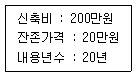
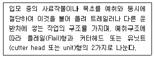

축산산업기사 (2003-05-25 기출문제)
1과목: 가축번식 육종학
1. 잡종 번식은 순종 번식에 의하여 성성숙 시기를 어떻게 변화시키는가?
- 단축시킨다.
- 지연시킨다.
- 영향이 없다.
- 품종에 따라 다르다.
(정답률: 78%)

2. 근친교배의 유전적 효과를 바르게 설명한 것은?
- 동형접합체의 비율을 증가시킨다.
- 이형접합체의 비율을 증가시킨다.
- 유해 유전자의 출현 빈도를 낮춘다.
- 잡종강세의 현상이 나타난다.
(정답률: 86%)
3. 돼지의 인공수정시 정액의 최적 주입 부위는?
- 질내
- 자궁경내
- 수란관 상부
- 자궁체내
(정답률: 84%)
4. 어떤 개체가 뛰어나게 우수한 형질을 확실하게 유전시키는 것은?
- 득성유전
- 강력유전
- 선부유전
- 귀선유전
(정답률: 89%)
5. 닭의 산육능력과 가장 관계 깊은 요소는?
- 성장속도
- 부화율
- 휴산성
- 산란지속성
(정답률: 71%)
6. 다음은 Goodale-Hays의 산란 5요소설의 일부이다. 부적합하다고 생각되는 것은?
- 조숙성
- 산란강도
- 동기 휴산성
- 사료 이용성
(정답률: 69%)
7. 다음 중 임신말기에 주사하여 분만을 유기할 수 있는 호르몬제는?
- FSH
- LH
- Progesterone
- PGF2α
(정답률: 71%)
8. 임신과 가장 관계 있는 호르몬은?
- 발정 호르몬
- 웅성 호르몬
- 옥시토신
- 황체 호르몬
(정답률: 80%)
9. 자손의 능력에 기준을 두는 선발방법은?
- 가계내 선발
- 후대검정
- 혈통선발
- 개체선발
(정답률: 84%)
10. 같은 품종에 속하는 개체간의 교배법은?
- 누진교배
- 종간교배
- 잡종교배
- 순종교배
(정답률: 79%)
11. 돼지육종에 있어서 가장 중시해야 할 형질은?
- 임신율
- 사료효율
- 비유량
- 생존율
(정답률: 76%)
12. 번식계절에 영향을 미치는 요인이 아닌 것은?
- 일조시간
- 온도
- 습도
- 유전적 요인
(정답률: 56%)
13. 돼지에서 분만시 태위는?
- 두위와 미위
- 측두위
- 전태위
- 흉두위
(정답률: 64%)
14. 번식장애의 원인이 되는 것은?
- 고창증
- 간장염
- 자궁내막염
- 심낭염
(정답률: 87%)
15. 유우의 경제형질들 중 유전력이 가장 낮은 형질은?
- 유량
- 유지방
- 유단백질
- 번식능력
(정답률: 66%)
16. 유우의 유전적 개량에 있어서 유전 전달경로 중 선발강도가 가장 낮은 경로는?
- 수소-수소(sire to sire)
- 수소-암소(sire to dam)
- 암소-수소(dam to sire)
- 암소-암소(dam to dam)
(정답률: 68%)
17. 생후 200일에 이유시 체중이 200kg이었다. 생후 350일에 380kg이 되었을 때, 이 소의 이유 후 일당 증체량은?
- 1.0kg
- 1.2kg
- 1.4kg
- 1.6kg
(정답률: 73%)
18. 프리마틴(freemartin)은 어느 가축에서 많이 발생하는가?
- 토끼
- 돼지
- 산양
- 소
(정답률: 93%)
19. 돼지의 교배적기는 수돼지를 허용하기 시작한 시점으로 부터 대략 몇 시간 동안인가?
- 1∼5시간
- 6∼9시간
- 10∼25.5시간
- 27∼31시간
(정답률: 87%)
20. 교미 자극에 의하여 배란하는 가축은?
- 닭
- 토끼
- 염소
- 돼지
(정답률: 91%)
2과목: 가축사양학
21. 동물이 섭취한 영양소들은 소화기관내에서 작용하는 소화 효소에 의해 분해 흡수되는데 다음중 영양소와 이들 분해 소화효소를 잘못 연결한 것은？
- 전분 - 리파아제
- 단백질 - 펩신
- 단백질 - 트립신
- 지방 - 담즙산
(정답률: 67%)
22. 분만 후 비유기간에는 아무리 많은 칼슘을 공급해도 자기골격에서 손실되는 것을 방지할 수가 없다. 그러면 어느시기에 칼슘과 인이 체내에 다시 축적되는가?
- 임신초기
- 비유초기
- 건유기
- 비유절정기
(정답률: 78%)
23. 비육은 체지방을 증가시키는 목적이기 때문에 비육을 위한 에너지의 공급은?
- 초기보다 말기에 더 많은 에너지를 공급한다.
- 말기보다 초기에 더 많은 에너지를 공급한다.
- 초기보다 중기에 더 많은 에너지를 공급한다.
- 말기보다 중기에 더 많은 에너지를 공급한다.
(정답률: 72%)
24. 우유 중에 카로틴(carotene) 함량이 가장 풍부한 계절은?
- 봄
- 여름
- 가을
- 겨울
(정답률: 64%)
25. 산란계에서 산란피크로 올라가는 시기의 사양관리 중 잘못된 것은?
- 물과 사료는 항상 먹을 수 있도록 해 주어 충분한 영양을 공급한다.
- 20주령을 전후로 점등시간을 증가시켜 주며 백색계에 비해 체중이 무거운 갈색계는 점등교체시기를 다소 빠르게 해 준다.
- 온도, 습도 및 환기상태를 수시로 점검하고 최적의 환경조건을 만들어 준다.
- 산란피크에 도달하면 생리적으로 질병에 대한 저항력이 약해지므로 가급적 산란율이 오르고 있는 기간 중 가능한 모든 예방접종을 실시한다.
(정답률: 71%)
26. 동물의 간에서는 여러 가지 복잡한 대사작용이 일어나는데 그 중에서 간에 지방이 과도하게 축적되는 것을 예방하기 위해 최저밀도 지단백질인 VLDL(very low density lipoprotein)에 의해 간 밖으로 운반되는데 이 과정에서 지방 운반인자로 작용하는 물질은?
- Methionine 과 Lysine
- Lysine 과 Choline
- Phenylalanine 과 Lysine
- Methionine 과 Choline
(정답률: 52%)
27. 필수아미노산(essential amino acid)으로만 구성되어진 것은?
- lysine - tyrosine - serine - glycine
- methionine - cystine - valine - serine
- histidine - valine - lysine - leucine
- threonine - valine - lysine - alanine
(정답률: 53%)
28. 일정기간 영양소가 부족한 저영양 사료를 급여하여 성장을 지연시킨 후 고영양 사료를 급여하여 일시적으로 성장을 원래의 상태로 회복시켜 주는 사육방법은?
- 제한성장
- 보상성장
- 유도성장
- 과잉성장
(정답률: 68%)
29. 번식과 사양과의 관계를 올바르게 설명한 것은?
- 가축의 성성숙은 영양소의 수준에 영향을 받는다.
- 가축의 성성숙은 암· 수에서 일정하게 나타난다.
- 영양수준과 성성숙 시기와는 관계가 없다.
- 영양소의 과잉공급은 성성숙을 지연시킨다.
(정답률: 66%)
30. 돼지의 비육전기와 비육후기 사료의 단백질 수준을 바르게 설명한 것은?
- 비육단계에 관계없이 일정수준으로 공급하는 것이 좋다.
- 체중 증가가 되는 후기에 2-3% 높게 주는 것이 좋다.
- 체중 증가가 되는 후기에 2-3% 낮추어 주는 것이 좋다.
- 단백질 수준은 관계가 없다.
(정답률: 53%)
31. 콩에 있는 유해물질이 아닌 성분은?
- 고시폴
- 트립신 억제인자
- 사포닌
- 갑상선종 유기인자
(정답률: 58%)
32. 가축의 생명유지에 필요한 에너지를 지배하는 요인이 아닌 것은?
- 가축의 운동
- 환경온도
- 가축의 수면
- 사료의 성분과 섭취
(정답률: 68%)
33. 가축의 기초대사 측정시 요구되는 적합한 조건이 아닌 것은?
- 동물의 영양상태가 양호할 것
- 동물의 소화가 완전히 끝난 상태일 것
- 근육이 완전히 휴식상태일 것
- 모든 축종이 동일한 최적의 환경온도에서 실시할 것
(정답률: 47%)
34. 산란계에서 기별사양을 실시할 때 산란후기를 설명한 것 중 맞는 것은?
- 체중과 난중이 증가하는 시기이다.
- 닭의 체중과 산란율이 비교적 안정된 시기이다.
- 산란율이 60-65% 이하는 떨어지는 시기이다.
- 아미노산, 비타민, 무기물을 충분히 공급해야 한다.
(정답률: 55%)
35. 모든 가축은 사료를 섭취해야 성장하고 축산물을 생산하는데 농가에서 경영분석상 사료요구율과 사료효율를 많이 사용하는데 가축이 10일 동안 12kg의 사료를 섭취하고 10kg 체중이 증가했다면 이 때 각각 사료요구율과 사료 효율은?
- 사료요구율 = 1.2, 사료효율 = 0.83
- 사료요구율 = 0.83, 사료효율 = 1.2
- 사료요구율 = 1.4, 사료효율 = 0.95
- 사료요구율 = 0.95, 사료효율 = 1.4
(정답률: 67%)
36. 비육우의 효과를 높이기 위한 조건이 될 수 없는 것은?
- 조숙성일 것
- 조비성일 것
- 사료의 이용성이 높을 것
- 다산성일 것
(정답률: 77%)
37. 산란계의 산란중기의 특징을 설명한 것으로 가장 적당하지 않은 것은?
- 산란초기에 비해 단백질 요구량이 감소한다.
- 체성숙이 끝나는 42주령부터 약 4개월간이 이 기간에 해당한다.
- 이 기간중 증체가 계속되면 과비(過肥)하여 오히려 능력이 떨어진다.
- 체성숙이 끝났으므로 체중이 감소된다.
(정답률: 52%)
38. 곡물 생육시 또는 수확 후 저장시 곰팡이 발생에 의하여 생성되는 유해물질은?
- 유기산
- 유리 지방산
- 아플라톡신
- 유리 아미노산
(정답률: 81%)
39. 수수의 사료 가치를 저해하는 가장 큰 요인은?
- 탄닌(tannin) 함량이 많다.
- 옥수수보다 단백질이 많다.
- 옥수수보다 나이아신(niacin)이 많다.
- 카로틴(carotene) 함량이 적다.
(정답률: 75%)
40. 착유우 사료에 요소를 이용하는 경우 적절한 방법이 아닌 것은?
- 농후사료에 2% 이상 사용하지 않는다.
- 총 사료단백질 중 1/3을 초과하지 않는다.
- 1일 두당 0.2㎏ 이상 사용하지 않는다.
- 사료 중의 TDN 함량이 낮을 때 요소이용량을 높여 사용한다.
(정답률: 68%)
3과목: 축산경영학
41. 축산농가에 대한 경영 진단결과 소득이 낮았을 경우 경영개선의 계획수립상 부적당한 것은?
- 경영의 규모확대
- 비용절감의 기술도입
- 축산물의 품질 향상
- 생산비용의 증대
(정답률: 57%)
42. 노포크(Norfolk) 4포식 농법의 설명이 아닌 것은?
- 겨울 사료확보로 축산도입
- 윤재식 농법
- 전업적 축산
- 동곡 - 근채류 - 하곡 - 클로버
(정답률: 58%)
43. 보편적인 의미에서 축산경영에서 축산물에 대한 공급의 탄력성을 옳게 표현한 것은?
- 축산물의 공급의 탄력성은 일정하다.
- 축산물의 공급의 탄력성은 높다.
- 축산물의 공급의 탄력성은 낮다.
- 축산물의 공급의 탄력성은 0(제로)이다.
(정답률: 53%)
44. 조사료가 풍부한 지역에서 유리한 축종은?
- 비육우
- 젖소
- 돼지
- 닭
(정답률: 52%)
45. 축산경영에 있어서 대규모 경영의 유리성이 아닌 것은?
- 노동생산성의 향상
- 대외신용력 저하
- 자본생산성의 향상
- 축산물 판매의 유리성
(정답률: 80%)
46. 다음 재화 중에서 자유재는 어느 것인가?
- 종자
- 공기
- 사료
- 비료
(정답률: 83%)
47. 가변투입요소의 1단위 증투(增投)에서 오는 산출물의 변동을 뜻하는 것은?
- 평균생산력
- 총생산력
- 한계생산력
- 순생산력
(정답률: 71%)
48. 축산물 생산비를 산출하기 위한 조건으로 적합하지 않는 것은?
- 화폐가치로 표시할 수 있어야 한다.
- 생산하고자 하는 대상물에 투입된 것이라야 한다.
- 정상적인 생산활동을 위해 소비된 것이라야 한다.
- 생산을 위해 직접 구입된 것이라야 한다.
(정답률: 56%)
49. 어느 산란계농가의 연간 조수익이 3,000만원, 경영비가 2,000만원, 비용합계액이 2,200만원일 때의 연간소득은?
- 1,000만원
- 800만원
- 1,200만원
- 2,000만원
(정답률: 56%)
50. 사료효율을 구하는 방법이 바르게 표현된 것은?
- (사료급여량/축산물생산량) × 100
- (축산물생산량/사료급여량) × 100
- (구입사료대/유대) × 100
- (사료급여량/사료구입량) × 100
(정답률: 64%)
51. 축산경영에서 농업노동수단의 고도화 방법에 가장 영향을 주는 것은?
- 사료 효율을 높인다.
- 체력을 단련한다.
- 품종을 개량한다.
- 기계화를 단행한다.
(정답률: 73%)
52. 다음의 축사에 대한 감가상각비를 구하고자 한다. 정액법에 의한 1년분 감가상각비는 얼마인가?

- 8만 5천원
- 9만원
- 10만원
- 11만원
(정답률: 72%)
53. 축산경영의 궁극적인 목표는?
- 생산기술의 최대화
- 생산요소의 절감
- 생산량의 최대화
- 순수익 또는 소득의 최대화
(정답률: 84%)
54. 다음 중 가변비용에 해당되는 것은?
- 사료비
- 감가상각비
- 자기토지지대
- 고정자본이자
(정답률: 68%)
55. 경영비에 계산하지 않는 비용은?
- 고용노임
- 임대지대
- 가축비
- 자가노동비
(정답률: 60%)
56. 이윤극대화의 조건에 해당되는 것은?
- 한계수입과 한계비용이 같을 때
- 균형점에서 가격(한계수입)이 평균비용보다 낮을 때
- 균형의 근방에서 한계비용이 감소할 때
- 평균비용이 감소할 때
(정답률: 85%)
57. 축산물의 거래는 일반적으로 완전경쟁시장에서 이루어진다. 그 특징에 대한 설명 중 틀린 것은?
- 판매방법은 경매가 아닌 홍보활동에 의해 이루어짐
- 생산자와 소비자의 수가 매우 많음
- 동질적인 축산물 생산
- 생산자의 자유로운 진입과 이탈 가능
(정답률: 64%)
58. 토지의 기술적 성질에 해당되는 것은?
- 적재력
- 불가증성
- 불가동성
- 불소모성
(정답률: 73%)
59. 다음 유동자본재 중 재료인 것은?
- 사료
- 약품
- 종자
- 비료
(정답률: 36%)
60. 축산경영 복합화의 장점이 아닌 것은?
- 노동배분의 평균화
- 수입의 평균화
- 기술의 고도화
- 자금회전의 원활화
(정답률: 61%)
4과목: 사료작물학
61. 귀리의 일반적인 특성 중 틀린 것은?
- 줄기에 비하여 잎이 적다.
- 이삭이 여물 때도 잎이 심하게 시들지 않는다.
- 줄기는 굵어도 비교적 부드럽다.
- 가축의 기호성과 영양가가 높다.
(정답률: 67%)
62. 다음 중 내한성이 가장 강한 것은?
- 유채
- 보리
- 호밀
- 연맥
(정답률: 83%)
63. 다음 콩과 사료작물 중 자가수분작물이 아닌 것은?
- 완두
- 레스페데자
- 베치류
- 알팔파
(정답률: 50%)
64. 알팔파 재배시 가장 많이 탈취되는 영양분은?
- 인산
- 칼륨
- 칼슘
- 마그네슘
(정답률: 37%)
65. 일정한 재배지역에서 적합한 사료작물을 선별하기 위한 3대 구성요소가 아닌 것은?
- 환경
- 작물
- 농업기계
- 가축
(정답률: 65%)
66. 수단그라스계 잡종을 청예용으로 재배할 때 수량이 가장 높을 것으로 생각되는 파종 방법은?
- 조파
- 산파
- 혼파
- 밀파
(정답률: 50%)
67. 경질 전분함량이 낮고 과피가 두꺼워 식용에는 적합하지 않지만 수량성이 가장 높아 사일리지용으로 재배되는 옥수수 종류는?
- 폭립종
- 마치종
- 감립종
- 나종
(정답률: 71%)
68. 갈색건초는 어느 건조법에 의해서 제조된 것인가?
- 양건법
- 발효건조법
- 건가건조법
- 인공건조법
(정답률: 65%)
69. 다음 중 풋베기법의 장점이 아닌 것은?
- 사일리지나 건초제조의 노력과 비용이 절약된다.
- 축사와 초지간의 거리에 제한을 받지 않는다.
- 방목에서 생기는 제상과 유린을 방지할 수 있다.
- 사일리지나 건초에 비해 영양가의 손실을 방지한다.
(정답률: 60%)
70. 합리적으로 조합된 작물을 같은 토양에서 일정한 순서에 따라 규칙적으로 돌려가며 재배하는 작부방식은?
- 간작
- 윤작
- 단작
- 다모작
(정답률: 74%)
71. 포복경을 내는 목초는?
- 레드 클로버
- 알팔파
- 화이트 클로버
- 오처드 그라스
(정답률: 48%)
72. 체중 500㎏정도의 젖소를 전량 방목에 의하여 생초를 급여할 경우 1일 몇 ㎏정도를 채식하는가?
- 30∼40㎏
- 60∼75㎏
- 80∼90㎏
- 100∼110㎏
(정답률: 61%)
73. 목초의 채초이용시 예취적기의 결정은 건물수량과 영양소 함량을 동시에 고려하여야 한다. 목초의 생육이 진행됨에 따라 영양소 함량의 변화를 바르게 설명하고 있는 것은?
- 단백질이 증가한다.
- 지방이 증가한다.
- 광물질이 증가한다.
- 셀룰로오스가 증가한다.
(정답률: 56%)
74. 이상적인 사일리지 발효는?
- 유산발효
- 초산발효
- 낙산발효
- 알콜발효
(정답률: 63%)
75. 다음에서 설명하는 기계는 무엇인가?

- 헤이컨디셔너(Hay conditioner)
- 테더(Tedder)
- 레이크(Rake)
- 포레이지 하베스터(Forage harvester)
(정답률: 69%)
76. 혼파초지의 일반관리에 대한 설명 중 잘못된 것은?
- 예취시기가 늦어질수록 수량은 증가하나 질은 떨어진다.
- 첫번째 예취가 빠를수록 화이트클로버의 비율이 많아진다.
- 마지막 예취는 서리오기전 40일전에 하는 것이 좋다.
- 상번초는 하번초에 비하여 예취높이에 영향을 받지 않는다.
(정답률: 74%)
77. 두과목초의 중요성에 해당되지 않는 것은?
- 잡초의 침입을 방지한다.
- 사초의 기호성을 개선한다.
- 칼슘의 함량이 많다.
- 혼파된 화본과 목초의 생육을 억제한다.
(정답률: 67%)
78. 건초의 품질을 평가하는 기준에 해당하지 않는 것은?
- 녹색도
- 잎의 비율
- 수분함량
- 제조방법
(정답률: 76%)
79. 토양개량 목초로 알맞고 윤작작물로 적합한 것은?
- 알팔파
- 토올 페스큐
- 오처드 그라스
- 레드 클로버
(정답률: 28%)
80. 가장 값싼 목초 이용방법은?
- 방목
- 채초
- 건초
- 사일리지
(정답률: 82%)